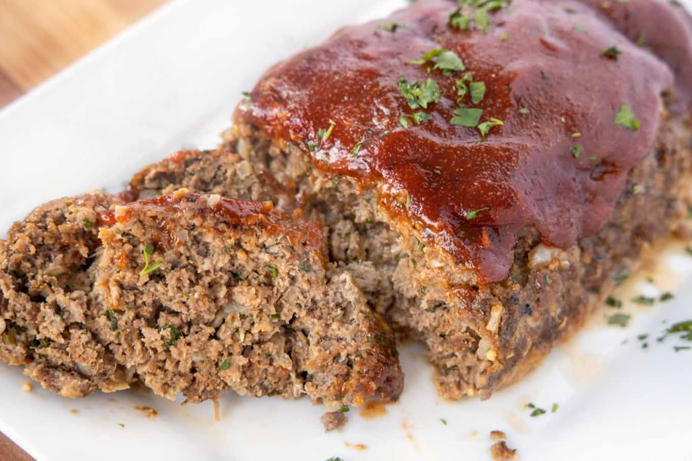

Back to Main Page
Classic Meatloaf

Description
Classic Meatloaf is a quintessential American comfort food that delivers an old-school, nostalgic dinner experience. It features a perfectly seasoned blend of ground beef, aromatics, breadcrumbs, and herbs, all bound together and shaped into a tender, juicy loaf. Baked to savory perfection, it strikes the ideal balance between a rich, melt-in-your-mouth interior and a deeply flavorful exterior.
The crown jewel of this timeless recipe is the sweet and tangy tomato-based glaze brushed over the top, which caramelizes beautifully in the oven as it bakes. This dish is celebrated for its simplicity, crowd-pleasing appeal, and the fact that it yields spectacular leftovers that make the ultimate next-day meatloaf sandwiches.
Ingredients
- Ground beef: 1.5 to 2 pounds (85% lean preferred)
- Breadcrumbs: 1/2 cup (plain or Italian seasoned)
- Onion: 1 small, finely diced
- Garlic: 2 cloves, minced
- Eggs: 2 large, beaten
- Milk: 1/4 cup
- Ketchup: 1/2 cup (divided for mixture and glaze)
- Worcestershire sauce: 2 tablespoons
- Brown sugar: 1 tablespoon (for the glaze)
- Mustard: 1 teaspoon (yellow or Dijon)
- Salt and pepper: To taste
- Fresh parsley: 2 tablespoons, chopped (optional)
Steps
- Preheat the oven: Set your oven to 375°F (190°C) and lightly grease a 9x5-inch loaf pan or line a rimmed baking sheet with aluminum foil.
- Sauté the aromatics: Heat a small splash of oil in a skillet over medium heat, add the finely diced onion and minced garlic, and cook for 3 to 4 minutes until soft and translucent, then set aside to cool slightly.
- Mix the liquid ingredients: Whisk the eggs, milk, 1/4 cup of the ketchup, Worcestershire sauce, yellow mustard, salt, and black pepper together in a large bowl.
- Combine the meat mixture: Add the ground beef, breadcrumbs, sautéed onions and garlic, and fresh parsley to the bowl, using your hands to gently combine everything until just mixed without overworking the meat.
- Shape the loaf: Press the meat mixture evenly into your prepared loaf pan, or shape it into a uniform 9x5-inch log directly onto the lined baking sheet.
- Prepare the sweet glaze: Stir the remaining 1/4 cup of ketchup and the tablespoon of brown sugar together in a small bowl until smooth.
- Apply the glaze: Brush the sweet tomato glaze evenly over the top and sides of the shaped meatloaf before it goes into the oven.
- Bake the meatloaf: Place the loaf in the preheated oven and bake uncovered for 55 to 60 minutes until the top is beautifully caramelized and the internal temperature reaches 160°F (71°C).
- Rest and slice: Remove the meatloaf from the oven and let it rest for 10 minutes before slicing to ensure it holds its shape perfectly when served.